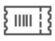

IRCTC

- Ask Disha
- Contact us
- Alerts
- Login
- Register
- Agent Login
Indian Railways
- Safety
- Security
- Punctuality

BOOK Ticket
PNR Status
Charts / Vacancy

From
Bangalore
KSR - Bangalore
To
Kasaragod
KSR - Kasaragod

Date
01 Aug 23
Sunday

Class
3A
AC 3 tier

Seat Type
TATKAL
AC 3 Tier
Search Train